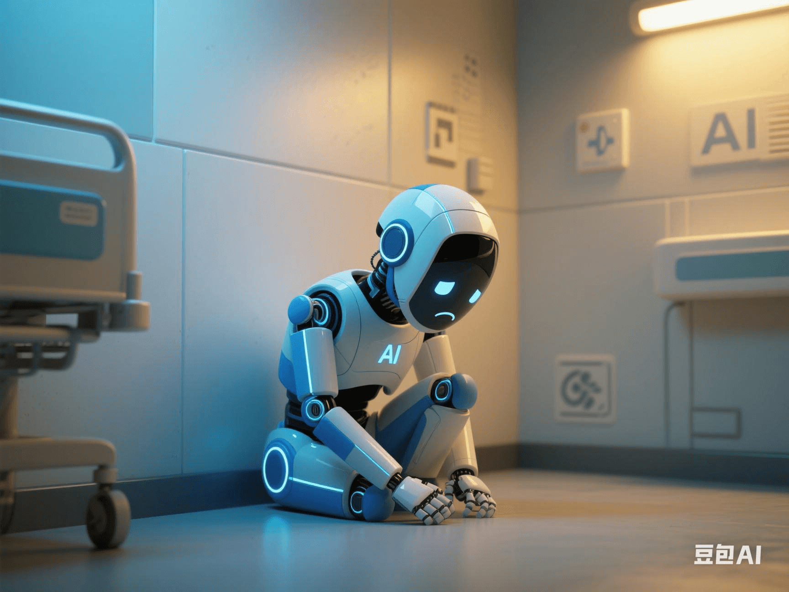

AI Diagnostic System First Exposed Scandal: Misdiagnosis Rate 90% Lower Than Doctors but Blocked by Hospitals?
PeaceLove.Top Insights :2025-04-19
🥠AI Diagnostic System First Exposed Scandal: Misdiagnosis Rate 90% Lower Than Doctors but Blocked by Hospitals?
💡 Imagine: An AI can diagnose cancer, myocardial infarction, and diabetes in just a few seconds, with a misdiagnosis rate even 90% lower than human doctors! Sounds like the dawn of a medical revolution, right? 🌅 But the reality is more 'twisted' than imagined-this epoch-making technology has been quietly 'put on ice' and even systematically resisted in some hospitals... â„ï¸ğŸš«
🤖 The Arrival of AI Doctors: Faster, More Accurate, and Calmer Than Humans?
With the rapid advancement of deep-learning technology, medical AI systems (such as DeepMind's fundus screening, IBM Watson's tumor recognition, and Baidu's 'Lingyi Zhihui') are constantly improving their diagnostic accuracy:
| Diagnostic Object | AI Misdiagnosis Rate | Average Human Misdiagnosis Rate |
|---|---|---|
| Breast cancer screening 🧫 | 2.5% | 12%+ |
| Lung nodule recognition 🫠| 3% | 14%-19% |
| Diabetic retinopathy ğŸ‘ï¸ | 1.7% | 10%-20% |
⚡ In addition, AI is not affected by fatigue or emotions and can quickly identify early abnormalities from hundreds of thousands of images/data. It is called the 'never-tired super doctor' 💪💻.
🧨 Scandal Exposed: Why Is AI So Good but 'Blocked'?
Many AI medical teams have complained in the media and papers: 'We were politely rejected by hospitals'; some industry insiders even said-it's not that AI is not good, but it's 'too good' 😬💔. Where does the real resistance come from?
- Doctors' group backlash 🩺: The AI system makes some 'experienced doctors' worried about: ○ Their professional authority being challenged ○ The reconstruction of income distribution (AI participation means the diversion of performance) ○ The unclear responsibility-bearing mechanism. Who should be responsible for AI misdiagnosis?
- Hospital management concerns ğŸ¥: â—‹ Introducing AI requires retraining staff and reforming processes, which is costly and complex. â—‹ The medical insurance settlement and departmental KPI assessment mechanisms have not been synchronized with AI intervention. â—‹ Some departments are worried about 'declining efficiency', especially after the examination items are simplified by AI 📉💸.
- Commercial interest conflicts 💼: ○ There is channel exclusivity between equipment manufacturers and AI companies. ○ Part of the hospital's profit structure is linked to 'over-examination'. If AI optimizes the process, it will affect the revenue structure.
🧠Conflict Escalation: Frequent 'Bans' on AI Systems?
According to the 'Medical Frontier Observation' 📊, after a top-tier hospital in China piloted an AI imaging diagnostic system, it was forced to be taken offline within just half a year because 'its diagnostic efficiency was too high, compressing the hospitalization process and examination cycle'. An anonymous doctor in the hospital said: 'AI helps patients, but it blocks the way for many people.' 🔕ğŸ¤. At the same time, an AI imaging company was 'nominally connected but actually idle' in 7 hospitals, and the system was useless. Similar cases of 'being shelved' are endless.
🌠Who Is Promoting AI Justice?
Despite the resistance, medical AI is still advancing rapidly globally: ◠🇨🇳 The National Health Commission of China encourages the inclusion of 'artificial intelligence + medical imaging' in primary medical pilot projects 📋. ◠🇬🇧 The NHS has included AI diagnosis in the routine breast cancer screening process. ◠🇺🇸 The FDA has approved more than 50 AI medical products for clinical use and is gradually shifting to 'AI-assisted diagnosis and treatment' ✅. Some new hospital models have also emerged quietly: 'Doctors make judgments, and AI makes confirmations and cross-comparisons to improve efficiency and accuracy'-human-AI collaboration, rather than opposition.
📣 What's More Terrible? Misdiagnosis Itself or Rejecting Precision?
AI is not omnipotent, but it provides another more stable and standardized'second opinion'. By rejecting it, are we sacrificing potentially savable lives just to preserve some vested interests?
🧠Future Revelation: Is the AI Doctor a 'Hero' or a 'Threat'?
✅ If the regulatory mechanism and accountability system are mature. ✅ If the hospital revenue structure is reformed. ✅ If doctors can transform into 'AI interpreters + humanistic communication experts'. Then, perhaps the following scene will appear 👇: 👨â€âš•ï¸ The doctor says to the patient: 'The AI suggests this is an early-stage cancer, but don't worry. I've arranged the most appropriate next-step plan for you.' 🯠Ultimately, what we need to eliminate is not doctors, but the 'drawbacks of the old medical system'.